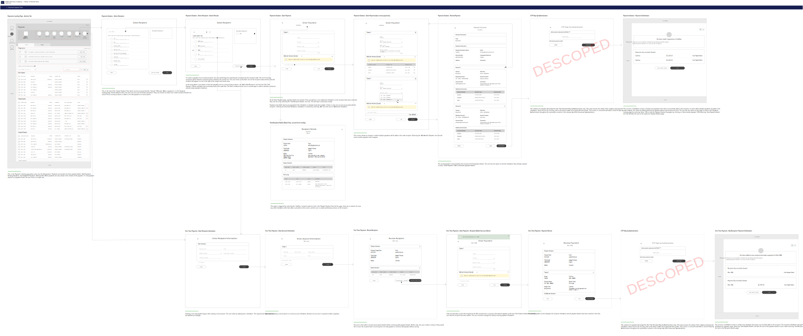
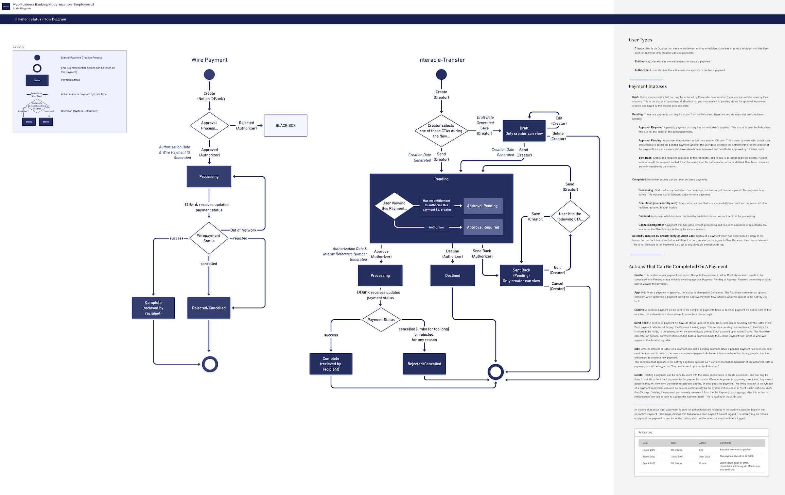
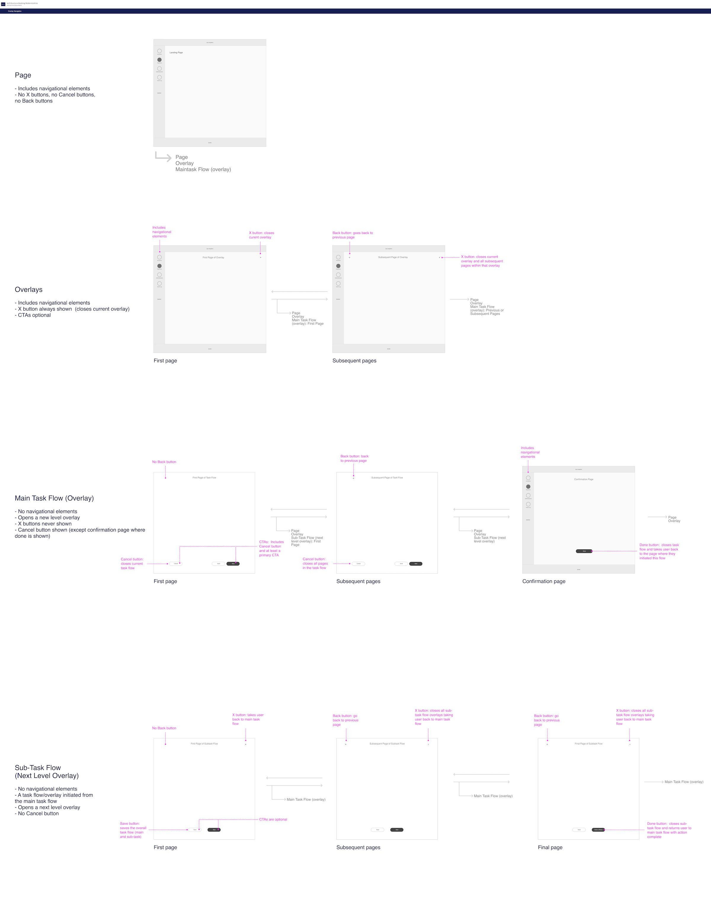
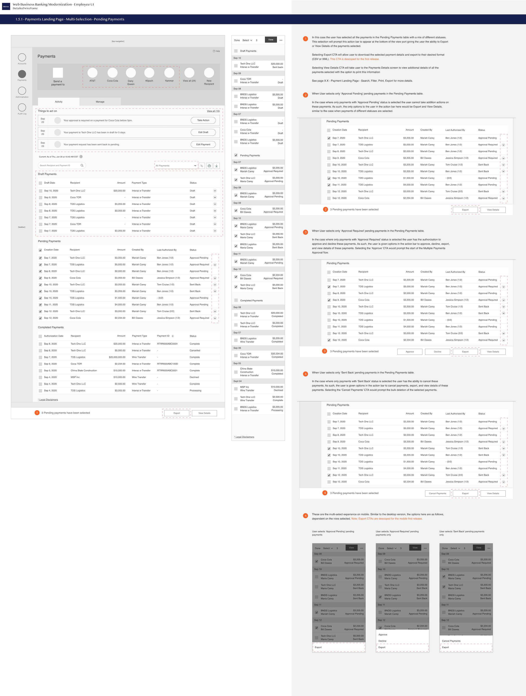
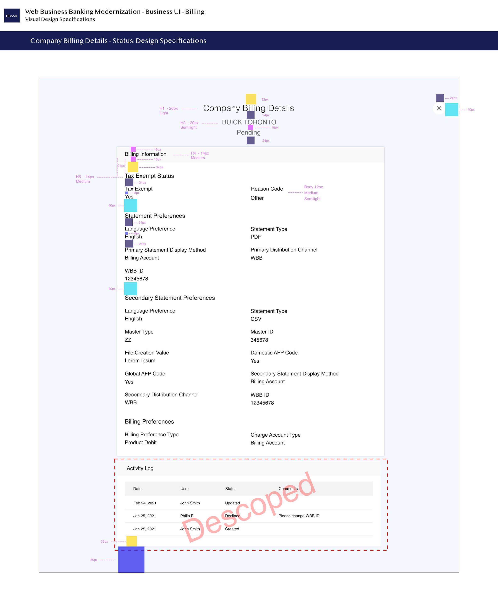
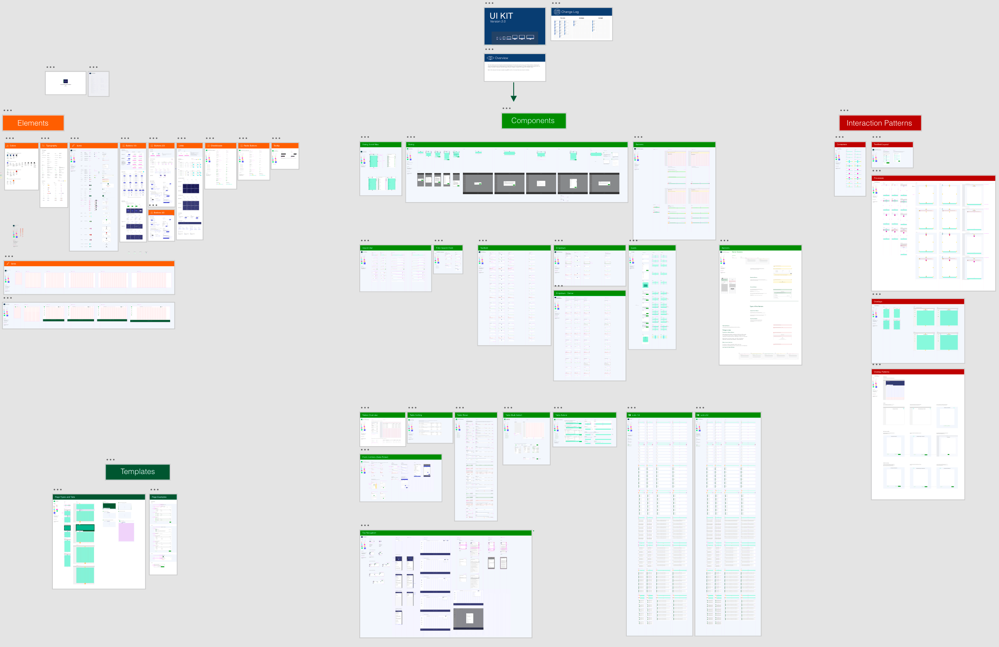
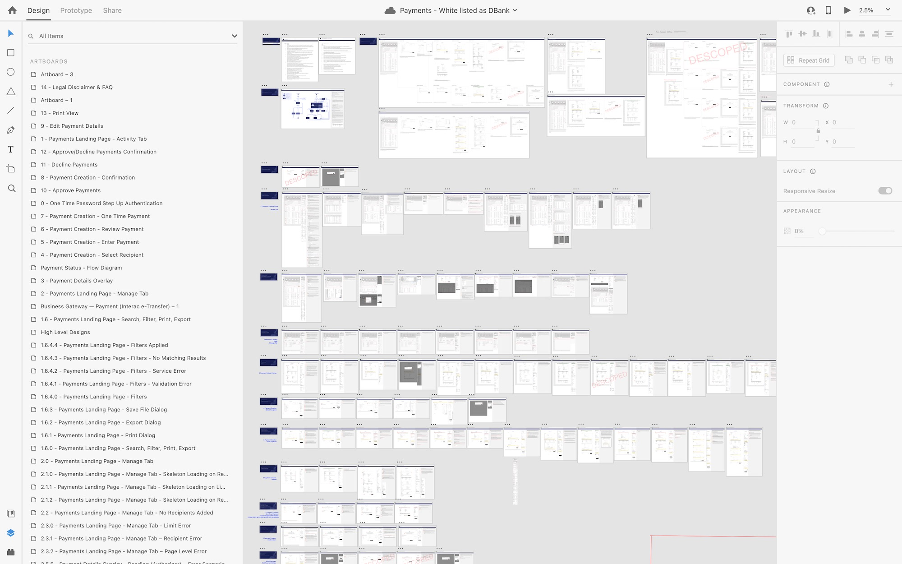
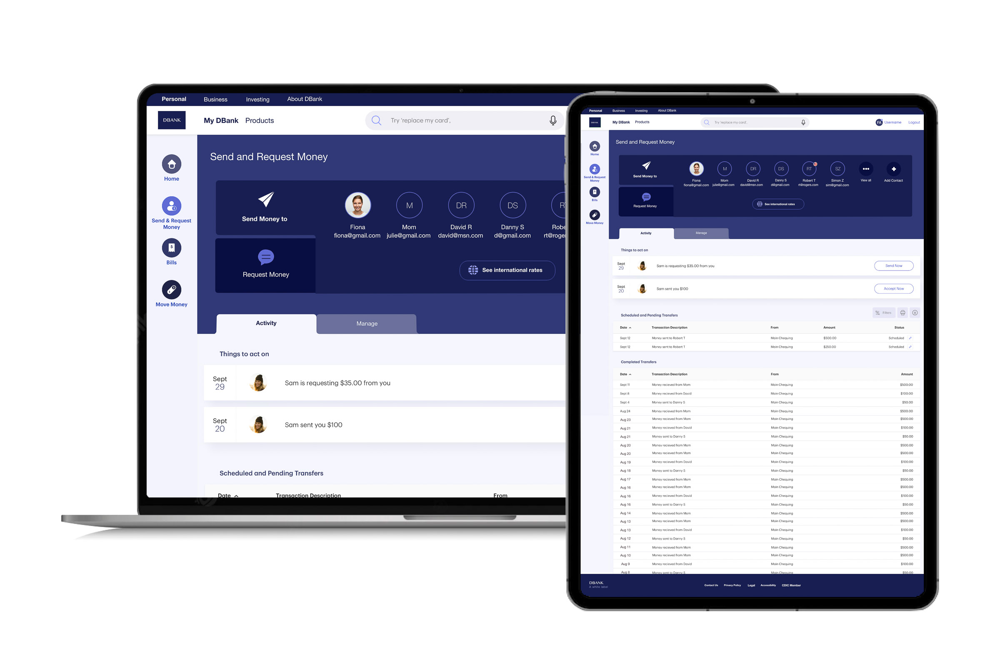

User Experience Designer @ a Top Five Canadian Bank
Rebuilding the business platform of this Canadian big five bank, from the ground up with new microservices and a completely new front end. Undertaking the designs of six different features (mini-projects) for two different user types was a challenge my pod was up for.
Industry
Banking / Finance
Duration
7 months (Nov 2020-June 2021)
Co-creators
Me + 1 UX designer, 1 visual designer, 1 team lead, working with 1 copywriter, business analysts, and developers
Most people are familiar with personal banking but there is another side of retail banking that belongs to businesses: from those with single stores handling transactions for everyday business purchases, to those with multiple locations or personnel who are sending and receiving hundreds of transactions a day. The latter is the type of platform I designed for throughout this case study with my UX design teammate. This is an extremely important platform, given businesses bring the most money to banks due to their large number of transactions.
The six features my pod worked on were sending and receiving payments, authorization and entitlement of business accounts to handle transactions, managing business account transaction limitations, remittance information, and sending wire payments. Many of these processes were done manually with people and paper, so our pod had to design the manual processes for the digital space, as well as add in new functionality.
Process
We worked on the six different features/sections simultaneously, with more focus on one or two at a time, if they relied on each other and to ensure we got feedback from technology and stakeholders earlier in the process.
The process we took was divided into three main phases, all in Adobe XD which was our approved design tool:
High-Level Design (creating high-level flows and wireframes)
Detailed Design (creating detailed annotated wireframes including all states and edge cases)
Visual Design (creating design specifications accurate to the expected look and feel)
The work throughout is very process-heavy and worked around technical limitations. We worked closely with the business to keep this fast-paced project on track and up to/above expectations throughout.
1: High-level design phase
We needed to first understand the user goals and motivations. My first two weeks on the project were spent going through existing files (style guides and interaction designs), participating in meetings, asking a ton of questions, and touching base with other pods working on other functions on the platform.
My pod had the opportunity to have multiple meetings with SMEs and the employee business banking platform users. These meetings helped us better understand the processes and the pain points in the experience. Some of these processes were completely manual so digitizing them required an in-depth understanding of the existing manual processes.
Requirements + takeaways from stakeholder meetings
These are not my full notes, but generally this is what we had to work with in the high-level phase.
Send and Recieve Payments (Business Customers)
Ability to create/delete a payment, multi-beneficiary payments etc.
Business accounts deal with tens to hundreds or more transactions within any given business day.
All transactions have limits (Interac only up to 25k, company limits are set for the entire company) and must be authorized by an entitled user (payments cannot be approved by a creator).
Ability to print/export everything seen.
Search functionality - need to determine what is most important variables to search by.
Pagination or lazy loading needs to be defined.
There is a concept of drafting a payment which should be available to creators and approvers (all other users are view-only users)
Payments will be in different states depending on the approval process. This needs to be thoroughly mapped out in detailed design.
Authorization: Give System Administrators (SAs) (business customers) the ability to approve payments. Currently, SAs can only view/manage individual users, but business customers would like to give authorization to multiple users at a time.
Entitlement: DBank employees can set entitlements to Business customers, creating SAs that can create payments (access management to set, create, or approve access). This feature would enable the management of a user account's real-time payment services.
Account removal and deletion should be available for both.
Billing (DBank Employees)
Goals are to optimize revenue, reduce operational risks, and set consumer-centric pricing and billing.
There are front office and back office DBank employees - some features are only available to some so just design for both until a business decision can be made. Terminology is different (just need to note for business logic).
Need to show all accounts attached to the service for billing services.
There are product-specific billing preferences which affect the information that is shown on screen.
Recipients aka Beneficiary (Business Customers)
Accessible from the Payments landing page.
Ability to search recipients (only first 1000 results available).
Ability to see all at once.
Ability to export a list of recipients - Business is not sure why yet.
Ability to save recipients.
Ability to delete a saved recipient by entering recipient id.
Remittance Information (Business Customers)
For some reason, it took me a while to wrap my head around what this was, but it is essentially fields of information that are predetermined by the business - standard info. We just need to digitize this.
Wire Payments (Business Customers)
There was some archived exploration done but this needs to be revisited.
Very limited information here, but we can plan this to be scalable for the future.
Some logic needs to be mapped out for detailed design.
Creating the high-level designs
In this phase, we created high-level user task flows for the happy paths, and the unhappy paths. These were designed given the points above (plus other detailed notes we gathered from interviews). The designs were iterated upon until we gained stakeholder approval, before moving on to phase 2. We decided to hold stakeholder meetings three times a week to iterate quickly.
Our high-level flows captured the most common screens related to a user's task. This is an example of a high-level flow for creating a payment as a business customer.

2: Detailed design phase
Our general detailed design process ended up going like this:
Creating high-level designs and any supplementary documentation that would help development and business understand, including flow charts and state diagrams.
Including edge cases, error states, and anything short of visual designs.
Highlighting features for future state development vs short-term development.
Adding to the design file's changelog.
Exporting new PDF version of the designs for developers.
Preparing a meeting agenda and questions to ask business and technology.
Presenting designs at the stakeholder meeting, getting approvals and answers, and finding out any new changes, requirements, and constraints.
Updating designs based on feedback then repeating all steps until stakeholders approve.
Along the way, we ran into plenty of challenges (outlined in the Challenges section).
Supporting Documentation
Challenge: Showcasing all designs and intentions in a PDF document
In the contract, our deliverables were a high-level design with annotations for development. Once we dived into the finer details, having only wireframes with annotations wasn't enough. More documentation was necessary to ensure the developers had what they needed to implement accurate designs.
The work extended to include flow charts, state diagrams, word documents and anything to help the ideas our pod designed to come into existence. State diagrams were very useful for developers to quickly understand the logic behind the designs.
An example of one of the state diagrams delivered with detailed annotations. This state diagram helped make the logic of Interac e-transfer and wire payment statuses clear. Clearly defining these statuses made creating designs easier and ensured that all stakeholders in the development process were on the same page.

Interaction Design
Going through the different flows we got to a point where interaction patterns had to be considered and documented. I researched best practices, then outlined how navigation should be handed throughout the platform we were designing for. This was later included in our design system to be applied to the platform.
Animations of how the transitions behaved (fade, slide, etc.) were not considered at the time since it was not in scope and was not a road blocker for my pod's designs to be completed.

Annotated Wireframes
The annotations described elements on the page and changes in state. I've received a lot of feedback on my work on this project and one thing was consistent - I'm pretty meticulous with my annotations. For all 200+ boards, we created (pages and states), I'm pretty happy with this!
An example of annotated wireframes delivered.

Design decisions
Because the platform was new and we did not have any real user testing opportunities, every design decision was based on business requirements/insights and interviews with DBank employees who would be using the platform and complete the current digital or manual processes.
Send and Recieve Payments (Business Customers)
We put a quick action area at the top of the page, as it was a common pattern in other DBank platforms and it would help users complete their primary goal which is to send payments to recipients. Ordering is by most frequented recipients, and the abilities to see all and create a new recipient last on the list of actions.
Since many transactions may appear on the page, bucketing payments into sections helped authorized users determine what is complete (does not require attention), pending (requiring action by an authorized user), and in draft (payments the user has created but not submitted).
Searching Payments is by recipient name of payment ID which we assumed would be the only logical attributes the user would search for. Other attributes like amounts would be filterable.
Lazy loading with a skeleton progress indicator helps quicken data loading on the page and shows that more items will appear. We also added an indicator that says "end of list" when the available transactions that can be viewed have been exhausted (payments beyond 18 months). This 18-month period matches the ability the user has to filter the payments.
Viewing limits and access to managing recipients were put in the manage tab since they are not as frequented as the payments lists which requires typically immediate action. The information in the manage tab has a technical limitation, requiring the information to be updated explicitly by the user by hitting an update button which we added at the top left.
Printing, exporting, and filtering payments were added to help the user navigate and utilize the information. Printing and exporting (XML and CSV) in particular was important for business users so we ensured it was easily available. Filtering was designed based on the most important items to users and what was available by technology.
When creating a payment, drafting and the ability to make payments to multiple recipients was included. A limitation we had to work around was the ability to send payments to those who are not a part of the company's recipient list, creating this concept of a one-time payment.
I personally did not work on this piece, but here is what my pod accomplished:
Authorization: System Administrators (SAs) (business customers) can view/manage individual or multiple users in their organization at a time, allowing users to approve or decline payments.
Entitlement: DBank employees can set or remove entitlements to Business customers, creating SAs.
Billing (DBank Employees)
We designed included the ability to set up a company, add services to the company, add billing for the services added, and edit the billing preferences for the services.
We mapped flows for a future version allowing back-office employees to approve requests from the front office. Having done something similar in payments, we took the pattern and used it here.
The UI mimicked the same pattern we had on the payments page, where the main action is in a primary tab, and then management actions are in a secondary tab. This put the main task in front of the user immediately, similar to search-based platforms, where a search bar is first and foremost to kick off the main task flow which is to set up services and billing for a company.
Understanding the form field requirements and the billing types was vital in designing the page and determining the flow (which changed based on user input).
Recipients aka Beneficiary (Business Customers)
The manage recipients feature gives the ability to search and manage recipients, and export recipient lists. The ability to send back a recipient was a new concept introduced in this work to help prevent rework and let creators of a recipient understand why the recipient may be rejected to allow the creator to quickly fix the issue and continue making a payment to the recipient. Getting buy-in for this "send back" value-add" was tough since it was new, but by documenting exactly how we proposed it would work and having it give more value to Business Customers we were able to have this included.
Things we really thought would elevate the experience but were pushed to future iteration consideration were searching by name and email (instead of just name), sorting pending recipients by date so that the user can see if any pending recipients are taking too long to be approved or just to see the status, and sorting the recipients alphabetically by name to increase efficiency when finding a recipient.
Two services were called after the user hits confirm when adding a recipient: 1. check if there is a duplicate by searching the recipient name, and 2. save the recipient. Both errors were accounted for to give the user more detail if adding a recipient is not successful.
Remittance Information (Business Customers)
Form inputs had to be based on existing form requirements. I made proposals as we specified input formatting and limits to help reduce user error and ensure the fields were accurate to business requirements, and ensure items were logically placed (visual hierarchy and usability).
How information was broken up and displayed was probably the biggest task in this feature. This is what pushed me to document the Interaction Design of the platform.
Wire Payments
Unfortunately at the time of writing this case study I no longer have access to the file since I'm not on the project and forgot to export a copy to white label! This was similar to creating and sending Interac Payment, but with different details and a tracker to provide visibility of where a transfer is in the process.
3: Visual design phase
The visual designer we worked with was the same visual designer for multiple pods. Her capacity made it also the job of myself and my UX design team member to complete some of the visual designs, and ensure we got them approved by the visual designer.
At the time of the project, Adobe XD did not provide a way to show design specifications to document viewers, and the developers and stakeholders consuming the design documentation preferred PDF. Due to this, all visual design specifications had to be explicitly specified. Sizing for character, icon, and font sizing were supported by the style guide.
An example of visual designs delivered.

Inspecting designs wasn't available on this project as the developers and all business personnel requested PDF documentation for hand-off rather than jumping into the XD cloud files. Due to this inefficiency and many other reasons, Figma is being transitioned to in the organization as of 2022.
Challenges
Given the number of user tasks and new asks throughout the project, the number of potential pages grew quickly. Not to mention, we were facing a few other challenges: an inconsistent design system, and my UX designer teammate and I have both never worked with Adobe XD before. Hiccups we encountered included lost work, sync issues, and time lost by not fully utilizing Adobe XD's features.
Challenge: Technical constraints and scope changes
We ran into multiple blockers that stemmed from technical constraints during the process. We had a large scope and little time, but we were able to surpass these blockers and bring efficiency by ensuring communication among our team and stakeholders was clear. Design ideas were brought up as early as possible to development and business to determine any technical limitations (especially evident in companies with legacy software). We streamlined meetings with stakeholders by sending out an agenda beforehand and emailing any questions that didn't require a meeting. Changes were logged in all working files and included with every deliverable, to help everyone keep track.
Challenge: Inconsistent design system
The platform we were designing for had strict accessibility constraints, so we relied on pre-existing components that had approval from legal, accessibility, etc. Any new components required a strong case and to be fully reviewed by accessibility.
As soon as I started the project, I realized that the design system we had been using was missing details required for development. Upon further search, older components included those missing specifications but were inconsistent with the newer design system. I brought this up to the bank's experience design lead early in the project.
From that discussion, our pod started our own fleshed-out visual design component library and design system we used for all our six mini-projects. We held weekly sessions to discuss progress, components, and make decisions. This design system included things that were not clear in the older design systems and new components and interactions related to our mini-projects. This initiative helped us greatly to get through our delivery dates and ensured that the correct interactions and sizes were available to developers. Note: This was a priority, but as the project unravelled, we discovered a team undertook the task of creating a design system for all of the bank's various platforms. This was great news; knowing improvement was coming. If the initiative didn't exist, it would be something I would have pushed the design leads and ultimately the client to undertake.

Challenge: Improving our workflow as a team while using the ever so buggy Adobe XD
As the number of pages we created increased, Adobe XD didn't want to cooperate. Errors regularly came up: component elements were out of place, XD was processing slowly, and work was sometimes completely erased. The 'reset component' feature helped with the misplaced elements on an artboard. Closing XD frequently helped clear our RAM, and better structure in our components and layers helped keep XD working smoothly. In the beginning, we didn't even use components because we didn't know they existed, but after we figured it out, it saved so much time. With work being completely erased frequently due to the bug, we had to pay more attention to when things were last synced and not walk over each other's toes.
To get through our tight deadlines without issues, we increasingly had remote work sessions. We hopped on a call, shared screen when required, and just talked through what we were doing to maximize efficiency. This was also helpful when ideating.
Challenge: Working with the copywriter
I quickly learned that sending over the latest designs with a list of changes was not the easiest for the copywriter to work off of. We had to figure out a streamlined approach to make the job as smooth as possible on both sides. So, I came up with a better process - to create a document with the exact component and copy requirements for every component requiring updates. This took me an extra half-hour once a week but saved a lot of meeting time and back-and-forth emails, and quickened the turnaround time for copy changes from the copywriter. Definitely a win!
Final handoff
We delivered six experience design files with over 200 pages and associated states for desktop and mobile for business customers and for DBank back and front-office employees with annotations, diagrams, and flows. We also:
Presented and delivered designs, highlighting areas of risk to both the business and developers.
Collaborated with designers on other pods to align new designs with existing design patterns.
Improved the process for working with the copywriter, making updates more efficient.
Identified areas for improvement within the existing design team's resources and design processes, initiating discussions and kick-starting an improvement plan. We also included actionable suggestions that were then carried out.
This was the total output of working with subject matter experts (SMEs), project managers, developers, a visual designer, and a copywriter to ensure the designs were fully fleshed out.
An example of one of the six XD working files. Each working file included high-level flows and detailed designs for each page and state.

A white-listed version of what one of the designs looked like with visual design applied.

Future
While designing, we wanted to be future-ready especially considering designs take months to build out and eventually rolled out. To ensure future work did not get lost, we kept them in the working file and annotated the current versus future states, clearly outlining their UI and functionality.
Given the crazy amount of work completed over the seven months, the working file was a living, breathing document. Still, some things needed to be passed to future designers for reference and future iterations. Person-to-person knowledge transfer is not feasible and separate documentation may be a security issue, so we decided to utilize the working file. We were already outlining parked designs for future work in red, but I made sure to create notes on the working file explaining where our pod left off and why specific design decisions were made. This was to help bridge that gap that was always apparent when picking up where past designers left off; often causing duplicate work without knowing it. Paired with concise annotations, we felt confident in the work we completed.
Learnings
Mastering Adobe XD + component everything
This project taught me how to use XD at a highly efficient level. I learned to utilize components extensively, ensure components are well structured, and now understand the collaboration limitations of XD. Also, closing XD at least twice a day prevented my laptop from exploding.
Bring in visual design earlier
Visual design coming in late in the process made things difficult. Given the incomplete design system, sometimes existing components I was not aware of would be better suited to the page being designed. Having visual design onboard earlier and there for each design, or even coming up with a smoother workflow to translate wireframes into actual visual design components would have been helpful. That way, stakeholders could see the ideas come to life sooner, repetitive work could be minimized, and knowledge from the visual designer could be brought to the table sooner.
Be strategic when bringing in a copywriter
Every project is different, and bringing in a copywriter early on can save project money and headache later. For this particular project, with things rapidly changing, having the copywriter step in too early brought a lot of rework for the copywriter. These pages weren't heavy on content as they were on the processes and updating the experience on the pages, so the content generated early on was often removed or changed. There was a lot of work on myself to highlight every little copy change that needed to be addressed, not just for one version of the design but several. Having over 14 revisions of the copy deck at the end of the process was a lot. Bringing in the copywriting a little later for each mini project in this particular project would have made the process less confusing.


.svg)